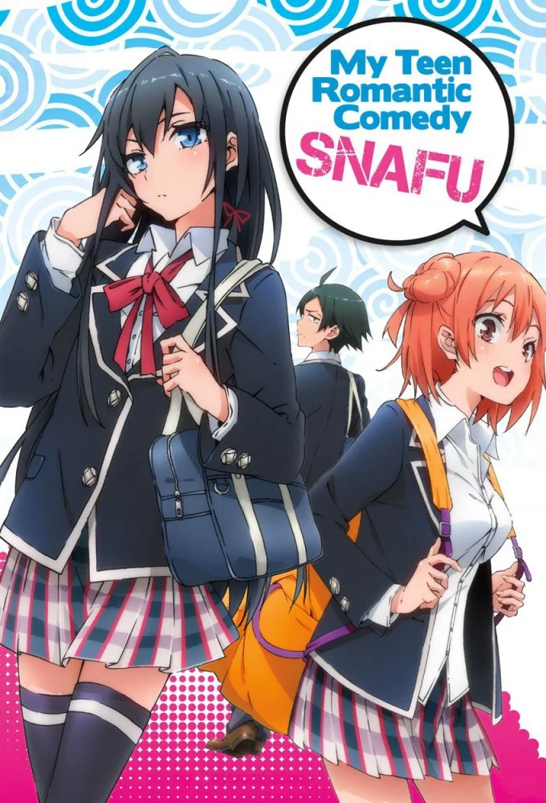
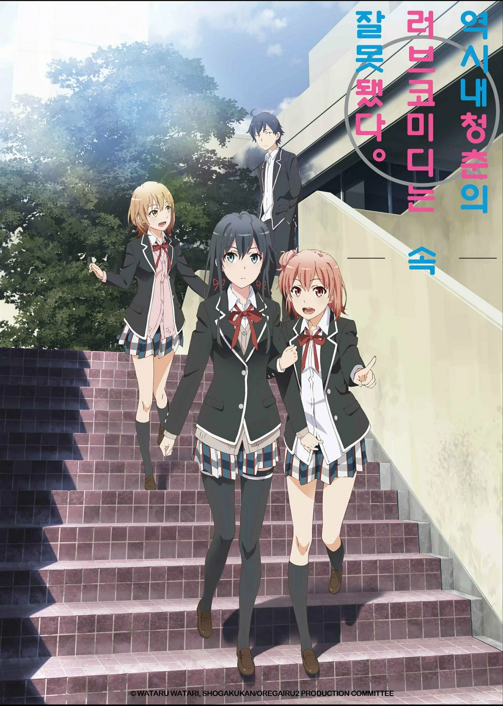
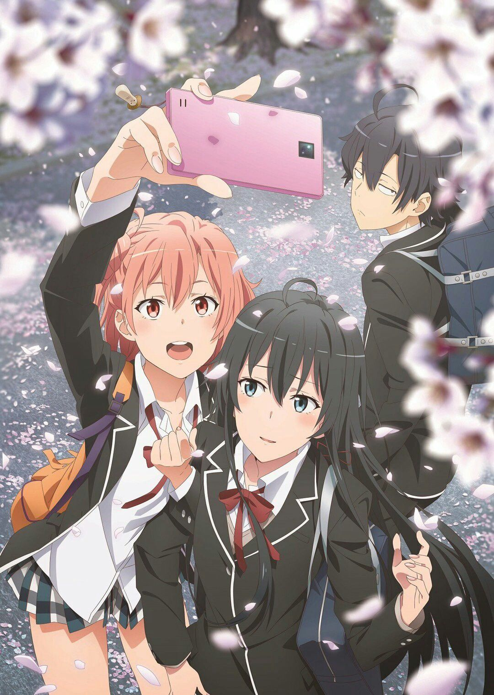

My Youth Romantic Comedy Is Wrong, As I Expected
Anime Trailer "Oregairu"

Season 1
The Service Club begins its journey with Hachiman Hikigaya and Yukino Yukinoshita as they solve various high school problems while facing their own social flaws.
Watch Season 1
Season 2
Relationships grow more complex and genuine feelings are tested as the club members struggle to understand what they truly want from each other.
Watch Season 2
Season 3
The final chapter approaches as graduation near. Hachiman, Yukino, and Yui must confront their unresolved feelings and find a genuine answer.
Watch Season 3